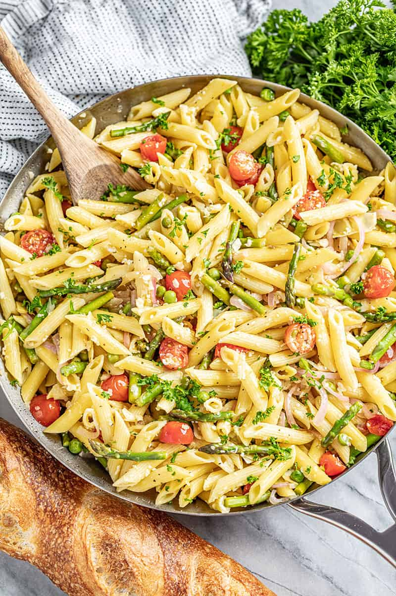

Pasta primavera is quite a straightforward recipe; spaghetti or fettuccine tossed with an array of fresh spring vegetables. When done right, this is one of the year's great seasonal recipes. This looks, smells, and tastes like a cool, sunny spring day.
Fill a large pot with lightly salted water and bring to a rolling boil. Hold basil bunch by the stems and dip basil leaves in boiling water until bright green, about 2 seconds. Immediately immerse basil in ice water for several minutes until cold to stop the cooking process. Once the basil is cold, drain well. Remove basil leaves from stems and discard stems.
Blend basil leaves, 1 cup chicken broth, 1/2 cup olive oil, and garlic together in a blender until smooth.
Stir fettuccine into the same pot of boiling water, bring back to a boil, and cook pasta over medium heat until cooked through but still firm to the bite, about 8 minutes. Drain.
Heat remaining 2 tablespoons olive oil in a large saucepan over medium heat. Cook and stir leek and green onion in hot oil until softened, about 5 minutes. Add jalapeno and salt; cook and stir until jalapeno is soft, about 5 minutes.
Increase heat to medium-high. Stir 2 cups chicken broth, zucchini, sugar snap peas, and English peas into jalapeno mixture; bring to a simmer and cook for 5 minutes. Add asparagus and continue cooking until asparagus is soft, about 3 minutes more.
Pour 1/4 cup basil-garlic mixture into zucchini mixture and cook and stir until heated through, about 1 minute. Remove from heat.
Place pasta in a large bowl; pour zucchini mixture over pasta and pour remaining basil-garlic mixture over the zucchini mixture. Spread Parmesan cheese over the top. Toss mixture briefly to combine and tightly wrap bowl with aluminum foil. Let stand until pasta and vegetables soak up most of the juices and oil, about 5 minutes. Toss again.
Enjoy!